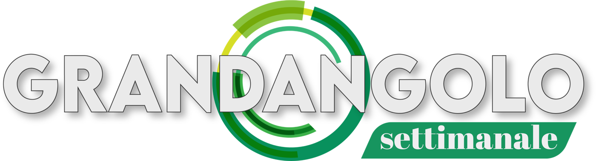

NWLcut per la redazione
Questa è l'edizione riservata a Grandangolo: il lower third, il logo e l'outro della testata sono già pronti nel pulsante «Grandangolo». Non condividere questo indirizzo fuori dalla redazione.
Apri sul computerSi installa come programma con il pulsante «Installa» del browser
Apri sul telefonoPoi «Aggiungi alla schermata Home»
Scarica il kit Grandangolo (.nwlkit)Per il programma installato da exe o da Microsoft Store: «Kit» → «Modifica kit» → «Importa un kit…», oppure trascina il file nella finestra
Outro incluso nel kit: no